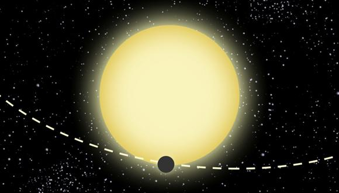
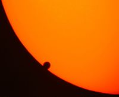
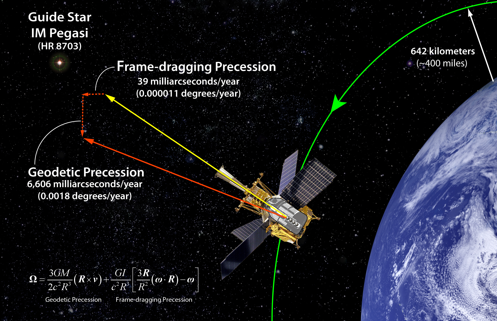

Entradas en ciencia
Espiral de Parker con Python
- 2024-10-06
En esta entrada veremos la solución numérica a la ecuación diferencial no lineal de primer orden que modela la velocidad del viento solar en función de la distancia heliocéntrica. Una vez se obtiene este perfil de velocidad, el cual es dependiente de la temperatura se procede a transformar a coordenadas lagrangianas centradas en un punto de emisión sobre la corona. De esta forma será más natural construir un brazo de la espiral de Parker, sobre el cual evoluciona el perfil de velocidad hallado.

Recursos de acceso abierto para tu investigación
- 2024-06-02
Ante la barrera de acceso de información especializada, típicamente por requerir de pago, existe una variedad de alternativas de acceso abierto.
¿Nos atraemos gravitacionalmente?
- 2019-11-08
La interacción gravitacional o mal llamada fuerza gravitacional (hablamos de dos cosas diferentes), suele verse en nuestro imaginario como una interacción dominante, finalmente, controla el movimiento de los grandes astros y nos ata a la Tierra. Pero, esta interacción no es exclusiva de los astros, existe entre todos los cuerpos con masa, y si es así, ¿por qué no somos atraídos gravitacionalmente por otras personas?
Cumple 28: perfecto, triangular y hexagonal
- 2018-04-01
Bueno, después de algún tiempo vuelvo con entradas que por fin se relacionan con algo que no sea tecnología. La motivación de esta publicación es el particular mensaje de cumpleaños que me dejo mi hermano, y que dice así:
¿Tetracuark?
- 2013-06-18
Bueno, resulta que el mundo de la física de partículas viene en un continuo agitar, y nuevos datos y modelos surgen a partir de los experimentos realizados en los grandes aceleradores de partículas (esos túneles enormes en los cuales se hace que partículas a muy alta velocidad colisionen).
Orden y origen del cosmos griego
- 2013-06-18
Segundo artículo basado en mi charla de «Cosmogonía y cosmología griega» de astronomía en el Parque de los Deseos del 14 de mayo de 2013 (el primero fue Cosmogonía griega).
El planeta de Einstein
- 2013-06-02
El planeta de Einstein como ha sido llamado el exoplaneta Kepler-76b es la muestra de la reutilización de los datos del proyecto Kepler para la búsqueda de nuevos exoplanetas.
Cosmogonía griega
- 2013-05-26
La cosmogonía y cosmología de los antiguos griegos se encuentra profundamente vinculada. Sus elementos cosmológicos si bien prescinden de la mitología desde los razonamientos del primer filósofo griego, Tales de Mileto, se puede rastrear el origen de algunos de estos en ella. Los relatos de la cosmogonía griega pueden ubicarse en los textos de Homero y la Teogonía de Hesíodo, en los que se ilustra la estructura de su universo y sus dioses.

Asimov en la ciencia
- 2013-01-18
Isaac Asimov si bien por el común de la gente es conocido solo como un escritor de ciencia ficción y misterio (esta ultima temática menos conocida por el común) y como un gran divulgador de la ciencia, también fue un científico.
El doble cumpleaños de Newton y el calendario gregoriano
- 2013-01-04
Hoy es una nota de tipo curiosa, ya que algunos recordaran que hace 10 días muchos conmemoramos el cumpleaños de Sir Isaac Newton, quien había nacido el 25 de diciembre de 1642. Sin embargo, hoy 4 de enero encontramos como en distintos perfiles sociales, publicaciones y blogs vuelven a conmemorar la fecha que recibió a uno de los revolucionarios de la física de su tiempo y a quien debemos gran parte de lo que nos enseñan en las clases de física de colegio y de primeros semestres de universidad.
Pos-higgsteria
- 2012-11-28
A pesar del tiempo transcurrido desde el anuncio oficial del CERN, el 4 de Julio de 2012, sobre el descubrimiento de un nuevo bosón masivo que sería candidato al tan elusivo bosón de Higgs, el tema sigue dando de que hablar.
Marte nos trasnocha
- 2012-08-06
Con este lema (#MarteNosTrasnocha popularizado como hashtag en las redes twitter y google+), el Planetario Jesus Emilio Ramirez de la ciudad de Medellín nos convoca a participar hoy de uno de los eventos más esperados por la comunidad astronómica mundial. Aficionados y profesionales de la astronomía se reunirán hoy desde las 8pm en el planetario a ver la transmisión en directo de NASA JPL (si deseas ver la transmisión, puedes dar click en el link) de la llegada del Mars Curiosity a marte.
La evolución en los griegos
- 2012-05-13
Hablando un poco de la evolución biológica el día de ayer, dando inicio a las actividades del ciclo de astrobiología en el Club Orión, se genero la inquietud sobre el origen griego de la evolución, motivo por el cual me di a la tarea de buscar un poco y realizar esta breve reseña.
El último tránsito de Venus
- 2012-02-26
Retomando el blog después de cierto tiempo de abandono por diversos motivos, volvemos con las cosas que nos gustan, ciencia, tecnología y otras curiosidades geeks.
Posibilidad de Agua Salada en Marte
- 2011-09-18
Después de un largo periodo de ausencia en el blog, vuelvo por estos lados a seguir publicando sobre los temas de la ciencia que tanto nos apasiona aprovechando la imagen que expuse en la sesiones del Club Orión del Parque Explora.

Gravitomagnetismo y Gravity Probe B
- 2011-07-07
Una de las teorías de mayor impacto, no solo a nivel científico sino también del «saber popular» ha sido la teoría de la relatividad de Einstein, que por cierto, su nombre el cuál no fue del agrado de su autor que consideraba la existencia de los absolutos, fue asignado por Max Planck.
Cerebro prehistórico
- 2011-07-06
El cerebro, uno de los órganos tal vez de mayor importancia no solo por sus funciones sino por el interés por su compleja estructura, es un órgano de tejido bastante delicado. Sin embargo, hasta nuestros días se conocen algunos casos de cerebros bien preservados desde tiempos remotos.

ResearchGate, la red social de la ciencia
- 2011-05-11
Con el aumento del uso de la internet en nuestra vida diaria, constantemente hemos migrado todo tipo de actividades pertenecientes a esta al mundo virtual, conviertiéndonos de alguna manera en una nueva raza humana… un humano 2.0 llevando vidas 2.0.
La Tierra cambio después del terremoto de Japón
- 2011-03-13
Tal vez el título de la publicación dice poco, porque la Tierra siempre esta en un cambio continuo así no lo percibamos. Constantemente la masa de la Tierra aumenta por la deposición sobre ella de toneladas de material cósmico, como por ejemplo, el material de meteoros, meteoritos, aerolitos y otros durante las lluvias de estrellas. Así mismo, las interacciones gravitacionales con la luna y el sol deforman (despreciable) la superficie terrestre y frenan la rotación terrestre. Las placas tectónicas se desplazan, hunden y alzan continuamente. Pero bajo ciertos fenómenos, estos cambios son mas apreciables.
A la búsqueda del bosón de Higgs
- 2011-02-21
Este mes de febrero los investigadores del LHC del CERN han renovado su búsqueda de uno de los misterios mas elusivos del universo, el bosón de Higgs. El bosón de Higgs es una hipotética partícula predicha por el modelo estándar de la física de partículas (la única de dicho modelo sin confirmación experimental) de gran energía y que cumple con la función de dotar de masa a las demás partículas existentes.
El planeta X
- 2011-02-20
Como sabemos, hace unos años considerábamos en nuestro sistema solar 9 planetas e incluso la cuenta llego a aumentar a 10, y dejar como candidatos a otros tantos. Esto motivo a una revisión del concepto planeta por parte de la IAU, que elimino a Plutón y al reciente candidato de la categoría de planetas y quedaron como planetas menores o planetoides.
Calculan masa del agujero negro más grande
- 2011-01-30
El astrónomo Karl Gebhardt de la University of Texas, Austin, presento los resultados de su equipo de investigación el 12 de enero en el encuentro 217 de la Sociedad Americana de Astronomía. Su equipo calculo la masa y horizonte de eventos del agujero negro de la galaxia M87 (NGC4486) (galaxia elíptica de magnitud aparente 8.6 ubicada a 55 millones de años luz en la constelación de virgo).
EteRNA
- 2011-01-15
Ya últimamente nos encontramos con una gran cantidad de actividades, servicios y contenidos en internet. Ya somos parte de la red, así no estemos en su interior como sucede en la película TRON, pero si nos absorbe una parte considerable de nuestro tiempo.
Superconductores borrachos
- 2011-01-11
Como muchos de los descubrimientos de la ciencia, algunos suelen ocurrir por mero accidente, algunos bastante inverosímiles de carácter meramente figurativo y de leyenda urbana para no mas decir que es un golpe de suerte.
2011: Año Internacional de la Química
- 2011-01-10
En 2008, Naciones Unidas declaro que el año 2011 sería reconocido como el Año Internacional de la Química (IYC 2011), conmemorando los logros alcanzados en la química, y sus contribución a la humanidad.
Revisión a la tabla periódica
- 2010-12-22
Nuestros conocimientos sobre la naturaleza y universo que nos rodean cambian constantemente, y exigen su continua y periódica revisión y actualización, por las diversas necesidades para las áreas académicas, de investigación e industriales.
Santa cuántico
- 2010-12-21
Lo mejor de todo cuando crecemos es no olvidar algo fundamental, que también fuimos niños alguna vez. Tal vez pienso esto ahora porque algunas veces sin darnos de cuenta podemos destruir las ilusiones que los niños tejen alrededor de historias fantásticas, que son el alimento para su capacidad creativa, y nosotros por ser mayores y «saber» como son las cosas derribamos ese mágico mundo con dos palabras «NO EXISTE».
Nuestra nariz más vieja que los pies
- 2010-12-17
La relatividad de Einstein abrió un nuevo capítulo en la física desde sus primeros apuntes en un tratado de la electrodinámica de la luz. Desde la relatividad especial plantea ya un punto que separa rotundamente la nueva física a la física tradicional de Newton, y es la concepción no absoluta del espacio y el tiempo.
Recorrido por la célula
- 2010-12-12
Creo que el mundo vivo a cualquier escala puede exhibir una majestuosa belleza, y que esta es inspiración para que el arte cree una copia de la misma y la transmita. Parte de esta belleza de la vida no solo esta en sus formas (reconstruidas por curvas matemáticas, muchas de naturaleza fractal) sino también por su dinámica, compleja y precisa.
Pensando en el grafeno
- 2010-12-10
Aunque este material fue noticia ya hace un rato, vengo a pensar ahora en el porque sera mi tema de trabajo de grado. Este material fue noticia ya que por estudios de este material fue concedido el premio nobel de física a 2 físicos rusos que trabajan en la Universidad de Manchester.